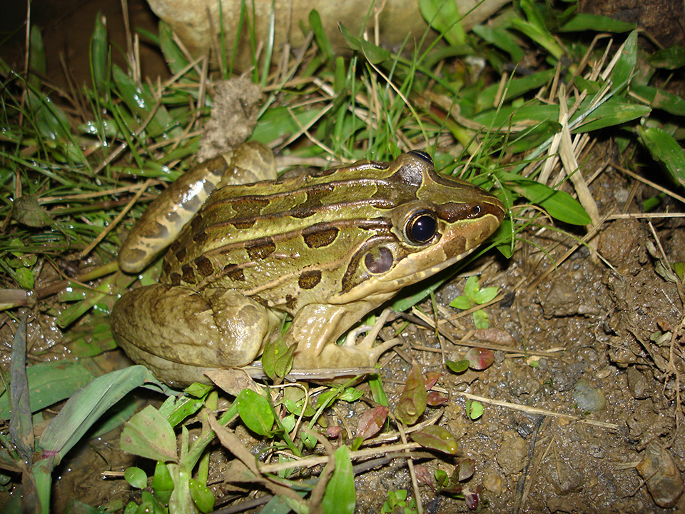
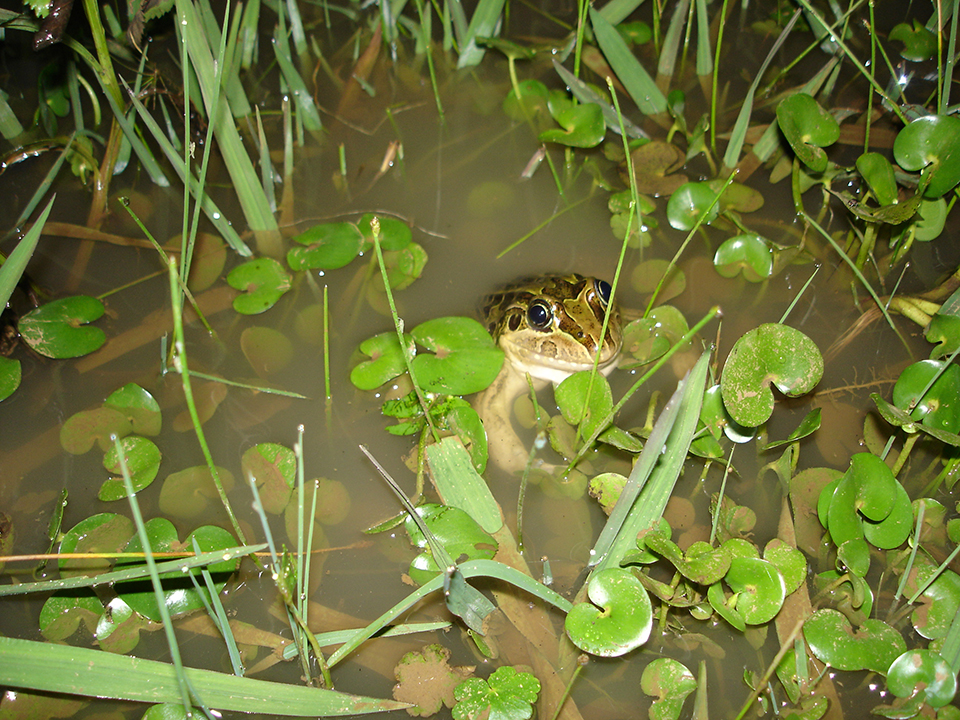
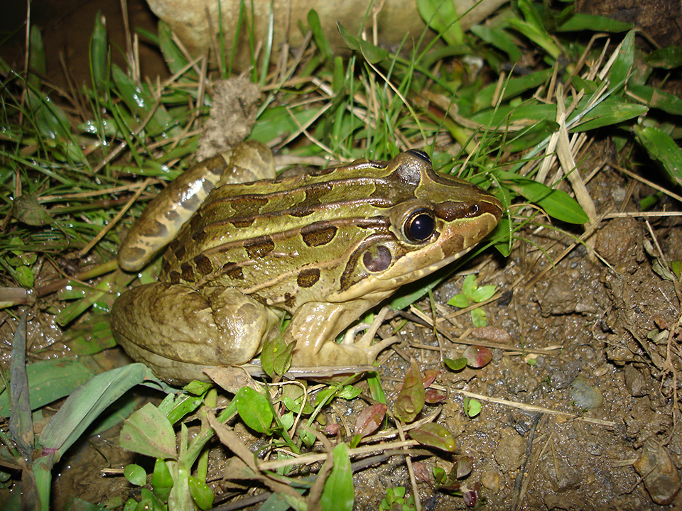
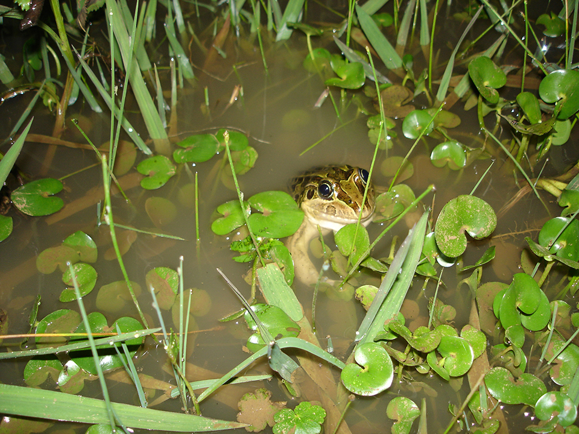

Animal de aproximadamente 10cm quando adulto, pode variar entre esverdeado e marrom, sempre com manchas arredondadas distribuídas pelas costas, a maior delas entre os olhos. Ainda nas costas, tem várias pregas que vão da cabeça até a segunda metade do corpo. É bastante escorregadia, por isso o nome de rã-manteiga Vive tanto em ambientes abertos quanto florestados, vocaliza desde a água e tem hábito terrestre. Costuma estar na borda de lagos e açudes. Bastante comum de ser encontrada, distribui-se nos estados de RS, SC, PR, SP, RJ, ES, MG, BA, SE, AL, PE, PB, MS, MT, GO, TO, PA, AM, RO e DF. Em alguns lugares são utilizados como alimento.
Alimenta-se principalmente de lagartas de borboletas e mariposas, besouros e aranhas. A fêmea protege a desova e os girinos durante algum tempo de intrusos e predadores. O ninho é colocado na superfície da água, num ninho de espuma.
 


